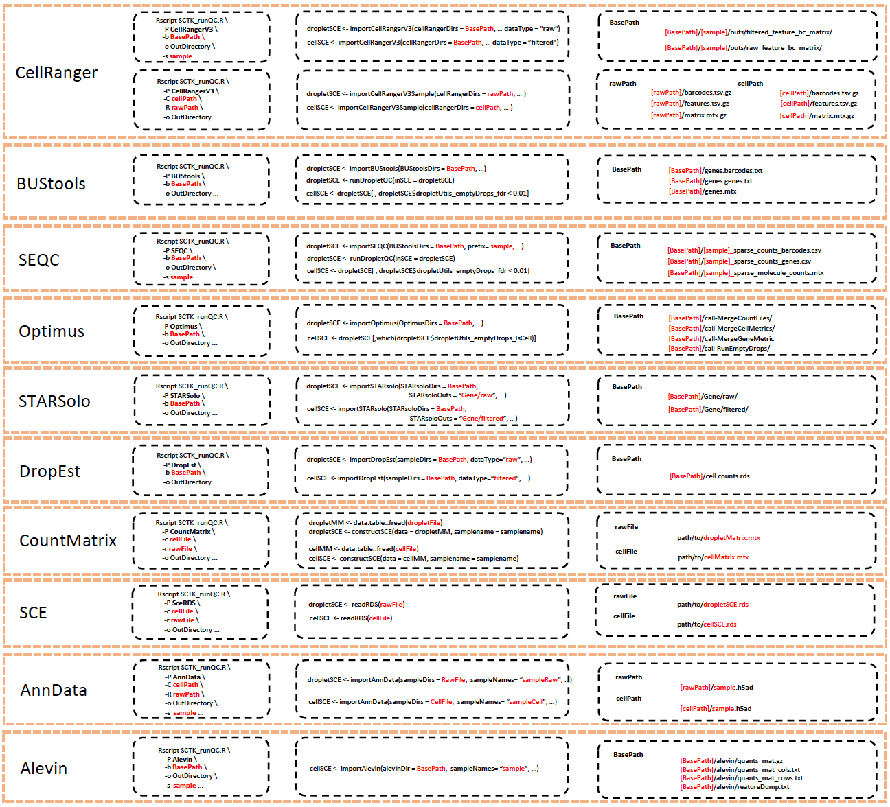

Generation of comprehensive quality control metrics with SCTK
Source:vignettes/articles/cmd_qc.Rmd
cmd_qc.RmdIntroduction
This pipeline will import data from single-cell preprocessing algorithms (e.g. CellRanger, HCA Optimus, Alevin), generate various quality control metrics (e.g. general metrics, doublet scores, contamination estimates) using multiple tools, and output results in standard data containers (e.g. SingleCellExperiment, Seurat object, AnnData).
For data generated with microfluidic devices, the first major step after UMI counting is to detect cell barcodes that represent droplets containing a true cell and exclude empty droplets that only contain ambient RNA.
- We use the terms “Droplet” matrix to denote a count matrix that still contains empty droplets;
- “Cell” matrix to denote a count matrix of cells where empty droplets have been excluded but no other filtering has been performed;
- And “FilteredCell” matrix to indicate a count matrix where poor quality cells have also been excluded.
The Droplet and Cell matrices have also been called “raw” and “filtered” matrices, respectively, by tools such as CellRanger. However, using the term “filtered” can be ambiguous as other forms of cell filtering can be applied beyond empty droplets (e.g. excluding poor-quality cells based on low number of UMIs). Both the original droplet matrix and the filtered cell matrix can be QC’ed in this pipeline. However, QC of the droplet matrix is specific for single cell data generated from microfluidic devices (e.g. 10X).
To run the pipeline, users can install the singleCellTK (SCTK) package along with Python dependencies that may be potentially used (mainly Scrublet and AnnData). Alternatively, users can run the Docker version of the pipeline which is described in detail further down in this page.
Running the pipeline
Running SCTK-QC with SCTK local installation
To run the pipeline script, users will need to download the SCTK_runQC.R script file here. Also, the tutorial of installing singleCellTK package can found in Installation page.
A simple example to run this pipeline on the ‘Cell’ matrix generated by Cellranger V3 is shown below:
Rscript SCTK_runQC.R \
-b /base/path \
-P CellRangerV3 \
-s SampleName \
-o Output_Directory \
-S TRUE \
-F SCE,AnnData,FlatFile,Seurat \
-g /Path_to_gmt/name_of_gmt_file.gmt \
-d Cell \
-n 2 \
-T MulticoreParam This pipeline enables different ways to import CellrangerV2/CellrangerV3 data for flexibility. Also, the pipeline is compatible with datasets generated by other algorithms. Please refer to the section Importing data from different preprocessing tools for more details.
User can quantify expression of mitochondrial genes by passing a GMT files containing mitochondrial genes (with -g/--gmt argument). User can also quantify expression of mitochondrial genes for human or mouse dataset by setting -M/--detectMitoLevel argument. Please refer to the section Gene sets for more details.
Besides, the pipeline contains various parameters to control the process of quality control. Please refer to the section Parameters for more details.
Running SCTK-QC with Docker
Installing docker
If you have not used docker before, you can follow the instruction to install and set up docker in Windows, Mac or Linux.
Running SCTK-QC pipeline using docker image
The Docker image can be obtained by running:
docker pull campbio/sctk_qc:2.6.0The usage of each argument is the same as running command line analysis. Here is an example code to perform QC on CellRangerV3 data with SCTK docker:
docker run --rm -v /path/to/data:/SCTK_docker \
-it campbio/sctk_qc:2.6.0 \
-b /SCTK_docker/cellranger_folder \
-P CellRangerV3 \
-s SampleName \
-o /SCTK_docker/Output_Directory \
-g /SCTK_docker/name_of_gmt_file.gmt \
-S TRUE \
-F SCE,AnnData,FlatFile,SeuratThe docker image will not access files in your host file system by default. To get access to the files on your machine, you can properly set up a mount volume. Noted that the transcriptome data and GMT file needed to be accessible to the container through mounted volume. In the above example, mount volume is enabled for accessing input and output directory using argument -v. The transcriptome and GMT files stored in the path /path/to/data of your machine file system is now available in /SCTK_docker folder inside the docker. To learn more about mounted volumes, please check out this post.
Please refer to the section Parameters for more details about parameters.
Running SCTK-QC pipeline docker image with singularity
Users who have not used Singularity before can install it following the instruction here. The Singularity image for SCTK-QC can be easily built using Docker Hub as a source:
singularity pull docker://campbio/sctk_qc:2.6.0The usage of singleCellTK Singularity image is very similar to that of Docker. In Singularity 3.0+, the mount volume is automatically overlaid.
It’s recommended to re-set the home directory when you run singularity. Singularity will mount \$HOME path on your file system by default, which might contain your personal R/Python library folder. If we don’t re-set the home to mount, singularity will try to use R/Python libraries which are not built within the singularity image and cause some conflicts. You can point to some “sanitized home”, which is different from \$HOME path on your machine, using argument -H/--home (see more information). Or you can disable the \$HOME binding by setting the argument --no-home. Besides, you can use argument --bind/-B to specify your own mount volume, which is the path that contains the dataset and will be used to store the output of QC pipeline. The example is shown as below:
singularity run --home=/PathToSanitizedHome \
--bind /PathToData:/data sctk_qc_2.6.0.sif \
-b /SCTK_docker/cellranger_folder \
-P CellRangerV3 \
-s SampleName \
-o /SCTK_docker/Output_Directory \
-g /SCTK_docker/name_of_gmt_file.gmt \
-S TRUE \
-F SCE,AnnData,FlatFile,SeuratImportant note about docker image
One important note about this docker image: please run the docker image on a machine / node which has a CPU with the following architecture: broadwell, haswell, skylake, cascadelake or the latest architecture. This can avoid having the “illegal operation” issue from Scrublet package, because this Python package are compiled by SIMD instructions that are compatible with these CPU architectures. Please specify the CPU architecture, at the script header after #$ -l cpu_arch=, as one of the following: broadwell, haswell, skylake, cascadelake or latest architecture. One of the example is shown below:
#!/bin/bash
#$ -cwd
#$ -j y
#$ -pe omp 16
#$ -l cpu_arch=broadwell|haswell|skylake|cascadelake
singularity run --home=/PathToSanitizedHome ### this also works for 'docker run'
--bind /PathToData:/data sctk_qc_2.6.0.sif \
-b /SCTK_docker/cellranger_folder \
-P CellRangerV3 \
-s SampleName \
-o /SCTK_docker/Output_Directory \
-g /SCTK_docker/name_of_gmt_file.gmt \
-S TRUE \
-F SCE,AnnData,FlatFile,SeuratParameters
Table of Parameters
The pipeline contains various parameters to control the process of quality control. The function of each parameter is shown below:
Required arguments
The required arguments are as follows:
| Parameter | Description |
|---|---|
-b, --basePath (required) |
Base path for the output from the preprocessing algorithm. |
-P, --preproc (required) |
Algorithm used for preprocessing. One of CellRangerV2, CellRangerV3, BUStools, STARSolo, SEQC, Optimus, DropEst, SceRDS, CountMatrix and AnnData. |
-s, --sample (required) |
Name of the sample. This will be prepended to the cell barcodes. |
-o, --directory (required) |
Output directory. A new subdirectory will be created with the name “sample”. R, Python, and FlatFile directories will be created under the “sample” directory containing the data containers with QC metrics. Default .. More information about output directory structure is explained in Outputs section below. |
-F, --outputFormat (required) |
The output format of this QC pipeline. Currently, it supports SCE, Seurat, FlatFile, AnnData and HTAN (manifest files that meets HTAN requirement). |
-S, --splitSample (required) |
Save a SingleCellExperiment object for each sample. Default is TRUE. If FALSE, the data of all samples will be combined into one SingleCellExperiment object and this object will be output. |
Optional arguments
The optional arguments are as follows. Their usage depend on type of data and user-defined behaviour.
| Parameter | Description |
|---|---|
-g, --gmt
|
GMT file containing gene sets for quality control. |
-t, --delim (required when -g is specified) |
Delimiter used in GMT file. Default "\t". |
-G, --genome
|
The name of genome reference. This is only required for CellRangerV2 data. |
-y, --yaml
|
YAML file used to specify parameters of QC functions called by SCTK-QC pipeline. Please check Specify parameters using yaml file section for details. |
-c, --cellData
|
The full path of the RDS file or Matrix file of the cell matrix. This would be use only when --preproc is SceRDS or CountMatrix. |
-r, --rawData
|
The full path of the RDS file or Matrix file of the droplet matrix. This would be provided only when --preproc is SceRDS or CountMatrix. |
-C, --cellPath
|
The directory containing matrix.mtx.gz, features.tsv.gz and barcodes.tsv.gz files originally generated by 10x CellrangerV2 or CellrangerV3 (files in the filtered_feature_bc_matrix directory). This argument only works when --preproc is CellRangerV2 or CellRangerV3. Default is NULL. If base_path is NULL, cellPath or rawPath should be specified. |
-R, --rawPath
|
The directory containing matrix.mtx.gz, features.tsv.gz and barcodes.tsv.gz files originally generated by 10x CellrangerV2 or CellrangerV3 (files in the raw_feature_bc_matrix directory). This argument only works when --preproc is CellRangerV2 or CellRangerV3. Default is NULL. If base_path is NULL, cellPath or rawPath should be specified. |
-d, --dataType
|
Type of data as input. Default is Both, which means taking both droplet and cell matrix as input. If set as Droplet, it will only processes droplet data. If set as Cell, it will only processes cell data. |
-D, --detectCells
|
Detect cells from droplet matrix. Default is FALSE. This argument is only evaluated when -d is Droplet. If set as TRUE, cells will be detected and cell matrix will be subset from the droplet matrix. Also, QC will be performed on the detected cell matrix. |
-m, --cellDetectMethod
|
Methods to detect cells from droplet matrix. Default is EmptyDrops. This argument is only evaluated when -D is TRUE. Other options could be Knee or Inflection. More information is provided in the Droplet QC documentation. |
-n, --numCores
|
Number of cores used to run the pipeline. By default is 1. Parallel computing is enabled if -n is greater than 1. |
-T, --parallelType
|
Type of parallel computing used for parallel computing. Parallel computing used in this pipeline depends on BiocParallel package. Default is MulticoreParam. It can be MulticoreParam or SnowParam. This argument will be evaluated only when --numCores is greater than 1. |
-i, --studyDesign
|
The TXT file containing the description of the study design. Default is NULL. This would be shown at the beginning of the HTML report of cell and droplet QC. |
-L, --subTitle
|
The subtitle used in the cell and droplet QC HTML report. Default is None. The subtitle can contain information of the sample, like sample name, etc. If -S is set as TRUE, the length of subsitle should be the same as the number of samples. If -S is set as FALSE, the length of subtitle should be one or NULL. |
-M, --detectMitoLevel
|
Detect mitochondrial gene expression level. If TRUE, the pipeline will examine mitochondrial gene expression level automatically without the need of importing user defined GMT file. Default is TRUE. |
-E, --mitoType
|
Type of mitochondrial gene-set to be loaded when --detectMitoLevel is set to TRUE. Possible choices are: human-ensembl, human-symbol, human-entrez, human-ensemblTranscriptID, mouse-ensembl, mouse-symbol, mouse-entrez and mouse-ensemblTranscriptID. |
Specify parameters using YAML file
Users can specify parameters for QC algorithms in this pipeline with a YAML file (supplied with -y/--yamlFile argument). The current supported QC algorithms including doublet detection (bcds, cxds, cxds_bcds_hybrid, doubletFinder, doubletCells and scrublet), decontamination (decontX), emptyDrop detection (emptyDrops) and barcodeRankDrops (barcodeRanks). A summary of each function is shown below:
QC yaml parameters
An example of QC parameters YAML file is shown below:
---
Params: ### should not be omitted
bcds:
ntop: 600
cxds:
ntop: 600
cxds_bcds_hybrid:
nTop: 600
decontX:
maxIter: 600
emptyDrops:
lower: 50
niters: 5000
testAmbient: True
barcodeRanks:
lower: 50The format of YAML file can be found here. The parameters should be consistent with the parameters of each QC function in SCTK. Parameters that are not defined in this YAML file will use the default value. Please refer reference for detailed information about arguments of each QC function.
Parallel computing
SCTK-QC pipeline enables parallel computing to speed up the analysis. Parallel computing is enabled by setting -n/--numCores greater than 1. The -n/--numCores is used to set the number of cores used for the pipeline.
The backend of parallel computing is supported by BiocParallel package. Therefore, users can select different types of parallel evaluation by setting -T/--parallelType argument. Default is MulticoreParam. Currently, MulticoreParam and SnowParam are supported for -T argument. However, MulticoreParam is not supported by Windows system. Windows user can choose SnowParam as the backend of parallel computing.
Description of input data
QC on combinations of droplet and cell matrix
-d argument is used to specify which type of count matrix is used in the pipeline. Default is Both, which means the pipeline will run quality control on both droplet and cell count data.
Users can also choose to run SCTK-QC pipeline on only the droplet count or cell count matrix, instead of running on both. In this case, the pipeline will only take the single input and perform QC on it. An example is shown below:
Rscript SCTK_runQC.R \
-b /base/path \
-P Preprocessing_Algorithm \
-s SampleName \
-o Output_Directory \
-S TRUE \
-F SCE,AnnData,FlatFile,Seurat \
-d Droplet \
-D TRUE \
-m EmptyDropsIf -d argument is set as Droplet, the QC pipeline will only take droplet count matrix as input and perform quality control. You can choose whether to detect cells from the droplet matrix by setting -D as TRUE. If yes, cell count matrix will be detected and the pipeline will also perform quality control on this matrix and output the result. You could further define the method used to detect cells from droplet matrix by setting -m argument. -m could be one of EmptyDrops, Knee or Inflection. EmptyDrops will keep cells that pass the runEmptyDrops() function test. Knee and Inflection will keep cells that pass the knee or inflection point returned from runBarcodeRankDrops() function.
If -d argument is set as Cell, the QC pipeline will only take cell count matrix as input and perform quality control. A figure showing the analysis steps and outputs of different inputs is shown below:

Importing data from different preprocessing tools
Import data from Cellranger
This pipeline enables different ways to import CellrangerV2/CellrangerV3 data for flexibility.
- If the cellranger data set is saved in the default cellranger output directory, you can load the data by running following code:
For CellRangerV3:
Rscript SCTK_runQC.R \
-b /base/path \
-P CellRangerV3 \
-s SampleName \
-o Output_Directory \
-S TRUE \
-F SCE,AnnData,FlatFile,SeuratFor CellRangerV2, the reference used by cellranger needs to be specified by -G/--genome:
Rscript SCTK_runQC.R \
-b /base/path \
-P CellRangerV2 \
-s SampleName \
-o Output_Directory \
-S TRUE \
-G GenomeName \
-F SCE,AnnData,FlatFile,Seurat-b specifies the base path and usually it’s the output folder of 10x cellranger-count. -s specifies the sample name, which has to be the same as the name of the sample folder under the base folder. The folder layout would look like the following:
├── BasePath
└── SampleName
├── outs
| ├── filtered_feature_bc_matrix
| | ├── barcodes.tsv.gz
| | ├── features.tsv.gz
| | └── matrix.mtx.gz
| ├── raw_feature_bc_matrix
| | ├── barcodes.tsv.gz
| | ├── features.tsv.gz
| | └── matrix.mtx.gz
...- If the
cellranger-countoutput have been moved out of the default cellranger output directory, you can specified the path to droplet and cell count matrix using arguments-Rand-C:
Rscript SCTK_runQC.R \
-P CellRangerV2 \
-C /path/to/cell/matrix \
-R /path/to/droplet/matrix \
-s SampleName \
-o Output_Directory \
-S TRUE \
-F SCE,AnnData,FlatFile,SeuratIn this case, you must skip -b arguments and you can also skip -G argument for CellRangerV2 data.
Import data from RDS or matrix stored in a text file
- If your data in stored as a
SingleCellExperimentobject in RDS file, singleCellTK also supports this type of input. To run quality control with RDS file as input, run the following code:
Rscript SCTK_runQC.R \
-P SceRDS \
-s Samplename \
-o Output_Directory \
-S TRUE \
-F SCE,AnnData,FlatFile,Seurat \
-r /path/to/rds/file/droplet.RDS \
-c /path/to/rds/file/cell.RDS- If your input is stored in TXT file as a matrix, which has barcodes as column names and genes as row names, run the following code to start the quality control pipeline:
Rscript SCTK_runQC.R \
-P CountMatrix \
-s Samplename \
-o Output_Directory \
-S TRUE \
-F SCE,AnnData,FlatFile,Seurat \
-r /path/to/matrix/file/droplet.txt \
-c path/to/matrix/file/cell.txtMethods to run pipeline on data set generated by other algorithms
SCTK-QC pipeline allows importing data from the following pre-processing tools or objects:
- CellRanger
- Optimus
- DropEst
- BUStools
- Seqc
- STARSolo
- SingleCellExperiment object saved in RDS file
- AnnData object saved in HDF5 file
If your data is preprocessed by other algorithms, you might want to make sure the ‘-b’ argument matches the path storing the data and the ‘-P’ argument matches the right preprocessing tools. Basically, the templated is shown below:
Rscript SCTK_runQC.R \
-b /base/path \
-P Preprocessing_Algorithm \
-s SampleName \
-o Output_Directory \
-S TRUE \
-F SCE,AnnData,FlatFile,SeuratThe following table describes how SCTK expects the inputs to be structured and passed for each import function. In all cases, SCTK retains the standard output directory structure from upstream tools. All the import functions return the imported counts matrix as an assay in a SingleCellExperiment object, with associated information in respective colData, rowData, reducedDims, and metadata fields.

The table above also shows the R console functions for the QC algorithms. Detailed information about function parameters and defaults are available in the Reference section.
Gene sets
Quantifying the level of gene sets can be useful quality control. For example, the percentage of counts from mitochondrial genes can be an indicator of cell stress or death.
User can quantify the expression of mitochondrial genes for human or mouse dataset by setting -M/--detectMitoLevel as TRUE. User needs to specify the correct --mitoType argument for the dataset. The SCTK-QC pipeline has built-in mitochondrial gene sets for human and mouse genes. It supports four different type of gene id: gene symbol, entrez ID, ensembl ID and ensembl transcript ID. Therefore, there are eight options for --mitoType arguments: human-ensembl, human-symbol, human-entrez, human-ensemblTranscriptID, mouse-ensembl, mouse-symbol, mouse-entrez and mouse-ensemblTranscriptID.
To quantify expression of other gene set, users can pass a GMT file (with -g/--gmt argument) to the pipeline with one row for each gene set. The first column should be the name of the gene set (e.g. mito).
The second column for each gene set in the GMT file (i.e. the description) should contain the location of where to look for the matching IDs in the data. If set to rownames, then the gene set IDs will be matched with the row IDs of the data matrix. If a character string or an integer index is supplied, then gene set IDs will be matched to the IDs in that column of feature table. Gene sets with mitochondrial genes can be found here.
Outputs
The output directory is created under the path specified by -o/--directory argument. Each sample is stored in the subdirectory (named by -s/--sample argument) within this output direcotry. Within each sample directory, each output format will be separated into subdirectories. The output file hierarchy is shown below:
(root; output directory)
├── level3Meta.csv
├── level4Meta.csv
├── sample1_dropletQC.html
├── sample1_cellQC.html
└── sample1
├──sample1_cellQC_summary.csv
├── R
| ├── sample1_Droplets.rds
| └── sample1_Cells.rds
├── Python
| ├── Droplets
| | └── sample1.h5ad
| └── Cells
| └── sample1.h5ad
├── FlatFile
| ├── Droplets
| | ├── assays
| | | └── sample1_counts.mtx.gz
| | ├── metadata
| | | └── sample1_metadata.rds
| | ├── sample1_colData.txt.gz
| | └── sample1_rowData.txt.gz
| └── Cells
| ├── assays
| | └── sample1_counts.mtx.gz
| ├── metadata
| | └── sample1_metadata.rds
| ├── reducedDims
| | ├──sample1_decontX_UMAP.txt.gz
| | ├──sample1_scrublet_TSNE.txt.gz
| | └──sample1_scrublet_UMAP.txt.gz
| ├── sample1_colData.txt.gz
| └── sample1_rowData.txt.gz
└── sample1_QCparameters.yamlDocumentation of available tools
Empty droplet detection:
- emptyDrops from the package DropletUtils
- barcodeRanks from the package DropletUtils
Doublet Detection
- scDblFinder from the package scDblFinder
- cxds, bcds, and cxds_bcds_hybrid from the package scds
- doubletFinder from the package DoubletFinder
- Scrublet from the package scrublet